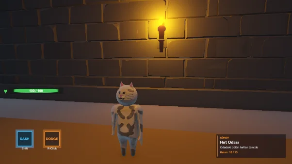
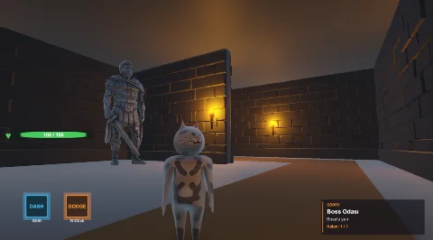
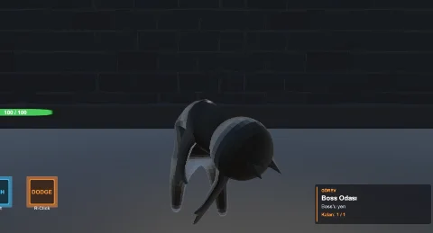

August 2026
A solo-built demo, put together in under 72 hours as part of my learning process.
- game development
- 3d
August 2026 · in progress
CatWando
A fighting game built around a cat character I modelled and animated entirely from scratch. I had never taken part in a game jam before, but the idea appealed to me — so I set myself the challenge of finishing it within 72 hours.
- game development
- 3d

